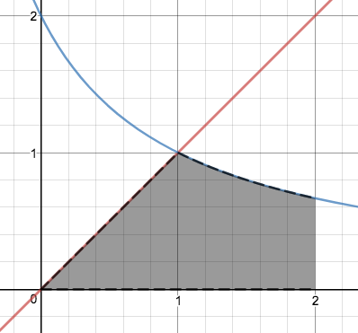
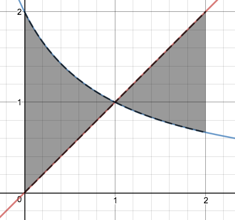

Section 3.8 Calculs de longueurs, d'aires et de volumes
¶Exercice 3.8.1.
Déterminez la longueur de la courbe donnée.
\(\displaystyle y=\frac{x^3}{3}+\frac{1}{4x}\) pour \(1\leq x\leq 2\)
\(\displaystyle x=\frac{\sqrt{y}(y-3)}{3}\) pour \(1\leq y\leq 9\)
\(\displaystyle\frac{59}{3}\)
\(\displaystyle\frac{32}{3}\)
Exercice 3.8.2.
Déterminez l'aire de la surface fermée comprise entre l'axe des abscisses et le graphique de la fonction \(f(x)=x^3-x^2-2x\text{.}\)
\(\displaystyle\frac{37}{12}\)
Exercice 3.8.3.
Déterminez l'aire de la surface fermée comprise entre l'axe des ordonnées et le graphique de la courbe \(\frac{x}{3}=1-y^4\text{.}\)
\(\displaystyle\frac{24}{5}\)
Exercice 3.8.4.
Sachant que les courbes ci-dessous correspondent aux équations \(\displaystyle y=x\) et \(\displaystyle y=\frac{2}{x+1}\text{,}\) calculez l'aire des régions ombrées.
1.
2.


\(\displaystyle\frac{1}{2}+2\ln\left(\frac{3}{2}\right)\)
\(\displaystyle 1+4\ln(2)-2\ln(3)\)
Exercice 3.8.5.
Calculez l'aire des régions fermées comprises entre les courbes indiquées.
\(\displaystyle y=x\) et \(\displaystyle y=x^3\)
\(\displaystyle x=y^2\) et \(\displaystyle x=5y-6\)
\(\displaystyle y=2x^2-5\) et \(\displaystyle y=7-x^2\)
\(\displaystyle y^2=x+1\) et \(\displaystyle y=x-1\)
\(\displaystyle \frac{1}{2}\)
\(\displaystyle \frac{1}{6}\)
\(\displaystyle 32\)
\(\displaystyle \frac{9}{2}\)
Exercice 3.8.6.
Déterminez l'aire de la région sous la courbe d'équation \(\displaystyle y=\frac{1}{x^3}\)
entre \(x=1\) et \(x=10\)
entre \(x=1\) et \(x=100\)
pour \(x\geq 1\)
\(\displaystyle\frac{99}{200}\)
\(\displaystyle\frac{9999}{20000}\)
\(\displaystyle\frac{1}{2}\)
Exercice 3.8.7.
Évaluez l'aire de la surface obtenue par rotation de la courbe donnée autour de l'axe indiqué.
courbe: \(\displaystyle y=\sqrt{4-x^2}\) pour \(-1\leq x\leq 1\) - axe: \(y=0\)
courbe: \(\displaystyle x=1+2y^2\) pour \(1\leq y\leq 2\) - axe: l'axe des \(x\)
courbe: \(\displaystyle y=x^2\) pour \(1\leq x\leq 2\) - axe: \(x=0\)
\(\displaystyle 8\pi\)
\(\displaystyle\frac{\pi}{24}\left(65\sqrt{65}-17\sqrt{17}\right)\)
\(\displaystyle\frac{\pi}{6}\left(17\sqrt{17}-5\sqrt{5}\right)\)
Exercice 3.8.8.
Calculez le volume du solide obtenu par rotation autour de l'axe indiqué de la région fermée délimitée par les courbes données. Utilisez la méthode de votre choix.
région: \(\displaystyle y=2-\frac{x}{2}\;;\;y=0\;;\;x=1\;;\;x=2\) - axe: l'axe des \(x\)
région: \(\displaystyle y=x\;;\;y=x^2\) - axe: \(y=0\)
région: \(\displaystyle y=2x^2-x^3\;;\;y=0\) - axe: l'axe des \(y\)
région: \(\displaystyle y=x-x^2\;;\;y=0\) - axe: \(x=2\)
région: \(\displaystyle y=x^2\;;\;x=y^2\) - axe: \(y=1\)
région: \(\displaystyle x=y^3\;;\;y=0\;;\;x=1\) - axe: \(x=2\)
\(\displaystyle\frac{19\pi}{12}\)
\(\displaystyle\frac{2\pi}{15}\)
\(\displaystyle\frac{16\pi}{5}\)
\(\displaystyle\frac{\pi}{2}\)
\(\displaystyle\frac{11\pi}{30}\)
\(\displaystyle\frac{3\pi}{5}\)
Exercice 3.8.9.
Calculez le volume du solide obtenu par rotation de la surface délimitée par \(f(x)=x^2\) et \(g(x)=4\) pour \(x\geq 0\)
autour de l'axe des abscisses.
autour de l'axe des ordonnées.
autour de l'axe \(y=5\text{.}\)
autour de l'axe \(x=3\text{.}\)
\(\displaystyle\frac{128\pi}{5}\)
\(\displaystyle 8\pi\)
\(\displaystyle\frac{416\pi}{15}\)
\(\displaystyle 24\pi\)